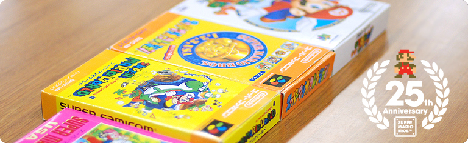

### 「スーパーマリオ２５周年」

<DIV ID="volbox-5"><P CLASS="volnum1"><A CLASS="btn-volnum1" TITLE="社長の代わりに糸井重里さんが訊く" HREF="../vol1/index.html">社長の代わりに糸井重里さんが訊く
<P CLASS="volnum2"><A CLASS="btn-volnum2" TITLE="ファミコンとマリオ 篇" HREF="../vol2/index.html">ファミコンとマリオ 篇
<P CLASS="volnum3"><A CLASS="btn-volnum3s" TITLE="『スーパーマリオ』シリーズ開発経験者 篇 その１">『スーパーマリオ』シリーズ開発経験者 篇 その１
<P CLASS="volnum4"><A CLASS="btn-volnum4" TITLE="『スーパーマリオ』シリーズ開発経験者 篇 その２" HREF="../vol4/index.html">『スーパーマリオ』シリーズ開発経験者 篇 その２
<P CLASS="volnum5"><A CLASS="btn-volnum5" TITLE="『スーパーマリオ』生みの親たち 篇" HREF="../vol5/index.html">『スーパーマリオ』生みの親たち 篇

<DIV ID="main-visual">
<H2>
<DIV ID="pagebox-wrap">
<DIV CLASS="pagebox">
<P CLASS="pagenum"><A HREF="index.html">1. 『スーパーマリオ』以降に入社して
<P CLASS="pagenums"><A>2. それぞれの『スーパーマリオ』との出会い
<P CLASS="pagenum"><A HREF="index3.html">3. 『スーパーマリオ』を“『マリオ』らしく”するために
<P CLASS="pagenum"><A HREF="index4.html">4. 夜中にジェスチャー
<P CLASS="pagenum"><A HREF="index5.html">5. 右に進んでいけば、いつかゴールに
<P CLASS="pagenum"><A HREF="index6.html">6. 『スーパーマリオ』と自転車

<DIV>

<DIV ID="int-box-wrap" CLASS="name5">
<H3>
<DIV CLASS="int-box"><DIV CLASS="int-name"><P>岩田
<DIV CLASS="int-text"><P>さて、『スーパーマリオ』はみなさんが<br>任天堂に入社する前に発売されましたが、<br>江口さんは、学生時代に『マリオ』を遊ばれていましたか？
<DIV CLASS="clear"><DIV CLASS="int-box"><DIV CLASS="int-name"><P>江口
<DIV CLASS="int-text"><P>実は・・・遊んだことがなかったんです。<br>僕は入社すると同時に社宅に住むことになったんですが、<br>同期の部屋に遊びに行ったらその人が持っていて、<br>そのとき初めてファミコンというものを触ったんです。
<DIV CLASS="clear"><DIV CLASS="int-box"><DIV CLASS="int-name"><P>岩田
<DIV CLASS="int-text"><P>え？『スーパーマリオ』が発売された翌年に任天堂に入ったのに、<br>ファミコンすら知らなかったんですか？
<DIV CLASS="clear"><DIV CLASS="int-box"><DIV CLASS="int-name"><P>江口
<DIV CLASS="int-text"><P>はい。ファミコンに関しては、<br>「どうやらそういうものがあるらしい」と・・・（笑）。<br>でも、中学の頃、ゲーム＆ウオッチは遊んでいました。
<DIV CLASS="clear"><DIV CLASS="int-box"><DIV CLASS="int-name"><P>岩田
<DIV CLASS="int-text"><P>では、ゲームに関係ある会社であることはわかっていたんですね。
<DIV CLASS="clear"><DIV CLASS="int-box"><DIV CLASS="int-name"><P>江口
<DIV CLASS="int-text"><P>はい。それに、テレビ番組のスポンサーとかで<br>任天堂という社名は知っていましたので、<br>「一応、ちゃんとした会社だな」と思っていました。
<DIV CLASS="clear"><DIV CLASS="int-box"><DIV CLASS="int-name"><P>岩田
<DIV CLASS="int-text"><P>（笑）。<br>まあ、確かに１９８６年の当時、情報が伝わっていくスピードは<br>いまとはぜんぜん違って遅かったですからね。
<DIV CLASS="clear"><DIV CLASS="int-box"><DIV CLASS="int-name"><P>江口
<DIV CLASS="int-text"><P>インターネットはもちろんありませんでしたし。
<DIV CLASS="clear"><DIV CLASS="int-box"><DIV CLASS="int-name"><P>岩田
<DIV CLASS="int-text"><P>それにファミコンは８３年に発売されましたが、<br>世の中の人たちから広く受け入れられるようになったのは<br>８６年くらいからだったんですよね。<br>『スーパーマリオ』も世の中に認知されていくのは<br>発売されてしばらく経った後でしたから。<br>いまや期待のゲーム機や、ゲームソフトの発売日には<br>お店の前に長い行列ができることがありますけど、<br>そのようなことが起こる前の時代だったんですよね。
<DIV CLASS="clear"><DIV CLASS="img-photo">
<DIV CLASS="int-box"><DIV CLASS="int-name"><P>江口
<DIV CLASS="int-text"><P>そうですね。
<DIV CLASS="clear"><DIV CLASS="int-box"><DIV CLASS="int-name"><P>岩田
<DIV CLASS="int-text"><P>紺野さんはどうだったんですか？
<DIV CLASS="clear"><DIV CLASS="int-box"><DIV CLASS="int-name"><P>紺野
<DIV CLASS="int-text"><P>僕は江口さんとは違って、<br>『スーパーマリオ』をすごく遊んでいました。<br>もともと<SCRIPT LANGUAGE="JavaScript" TYPE="text/javascript">
<!--
	document.write('<A HREF="player.html?width=280&amp;height=379&amp;id=009" CLASS="thickbox 009" TITLE="業務用の『ドンキーコング』"><SPAN>業務用の『ドンキーコング』<'+'/SPAN><'+'/A>');
//-->
</SCRIPT><NOSCRIPT><A HREF="img/slide009.jpg"><SPAN>業務用の『ドンキーコング』</SPAN></NOSCRIPT><sup>（※19）</sup>が大好きで、<br>お金を入れて延々と遊んでいたんです。<br>ところが、それがファミコンで遊べるようになると聞いて、<br>ものすごく驚いて・・・。
<DIV CLASS="clear"><DIV CLASS="int-box"><DIV CLASS="int-name"><P>岩田
<DIV CLASS="int-text"><P>１００円を入れなくても、自宅で何度でも遊べますしね。
<DIV CLASS="notes-box"><DIV CLASS="notes-num"><P>※19
<DIV CLASS="notes-text"><P>業務用の『ドンキーコング』＝１９８１年に登場したアーケードゲーム。１９８３年７月にはファミコンと同時発売された。
<DIV CLASS="clear">
<DIV CLASS="clear">

<DIV CLASS="clear"><DIV CLASS="int-box"><DIV CLASS="int-name"><P>紺野
<DIV CLASS="int-text"><P>そうなんです。<br>それにファミコンの定価は１万４８００円でしたよね。<br>その頃、学校で３０万とか４０万円もする<br>マイコンとかパソコンをいじっていたのですが、<br>ファミコンはその機械と同等かそれ以上の・・・。
<DIV CLASS="clear"><DIV CLASS="int-box"><DIV CLASS="int-name"><P>岩田
<DIV CLASS="int-text"><P>はい、少なくともゲームを遊ぶうえでは<br>間違いなくそれ以上でした。
<DIV CLASS="clear"><DIV CLASS="int-box"><DIV CLASS="int-name"><P>紺野
<DIV CLASS="int-text"><P>それ以上のものを、家で触ることができると。<br>そこでファミコンを買おうと思って、<br>学校の先生に相談したんです。
<DIV CLASS="clear"><DIV CLASS="int-box"><DIV CLASS="int-name"><P>岩田
<DIV CLASS="int-text"><P>どうして学校の先生に相談されたんですか？
<DIV CLASS="clear"><DIV CLASS="int-box"><DIV CLASS="int-name"><P>紺野
<DIV CLASS="int-text"><P>当時、コンピュータークラブみたいなところに<br>所属していて、ファミコンが発売されると<br>先生から「ちょっと見てこい」と言われて、<br>大型スーパーに行ったんです。<br>そうしたら少し値引きされていて、<br>１万２８００円くらいで売られていたんです。<br>でも、わたしはイメージとして、<br>ファミコンの価格が１２万８０００円だと思い込んでいました（笑）。
<DIV CLASS="clear"><DIV CLASS="int-box"><DIV CLASS="int-name"><P>岩田
<DIV CLASS="int-text"><P>１２万８０００円・・・？
<DIV CLASS="clear"><DIV CLASS="int-box"><DIV CLASS="int-name"><P>紺野
<DIV CLASS="int-text"><P>学校では４０万、５０万円の機械をいじっていたので、<br>コンピューターというのは、<br>１０万円以上するのは当たり前だと思っていたんです。
<DIV CLASS="clear"><DIV CLASS="int-box"><DIV CLASS="int-name"><P>岩田
<DIV CLASS="int-text"><P>あははは（笑）。
<DIV CLASS="clear"><DIV CLASS="int-box"><DIV CLASS="int-name"><P>紺野
<DIV CLASS="int-text"><P>それで、すぐに学校に戻って、<br>先生に「超ディスカウントで売ってました！」と言ったら、<br>「よし、買おう」ということになって、<br>買ってから調べてみると、これまたすごい高性能で。
<DIV CLASS="clear"><DIV CLASS="int-box"><DIV CLASS="int-name"><P>岩田
<DIV CLASS="int-text"><P>当時の家庭用テレビゲーム機のなかでも、<br>価格も性能もファミコンは頭抜けていましたからね。
<DIV CLASS="clear"><DIV CLASS="int-box"><DIV CLASS="int-name"><P>紺野
<DIV CLASS="int-text"><P>そうなんです。頭抜けていました。<br>しかも、『ドンキーコング』が遊べるマシンが<br>１万円台で売っているというのがショックでした。<br>その後、自分でもファミコンを買いました。<br>その頃はまだ<SCRIPT LANGUAGE="JavaScript" TYPE="text/javascript">
<!--
	document.write('<A HREF="player.html?width=400&amp;height=295&amp;id=010" CLASS="thickbox 010" TITLE="四角ボタン"><SPAN>四角ボタン<'+'/SPAN><'+'/A>');
//-->
</SCRIPT><NOSCRIPT><A HREF="img/slide010.jpg"><SPAN>四角ボタン</SPAN></NOSCRIPT>でした。
<DIV CLASS="clear"><DIV CLASS="int-box"><DIV CLASS="int-name"><P>岩田
<DIV CLASS="int-text"><P>初期型ですね。
<DIV CLASS="clear"><DIV CLASS="int-box"><DIV CLASS="int-name"><P>紺野
<DIV CLASS="int-text"><P>はい。それがすごく自慢で（笑）。<br>で、そうこうしているうちに『スーパーマリオ』が発売されて<br>すぐに買って遊んだんですけど、<br>横にどんどんスクロールすることに<br>それまでのファミコンゲームにない驚きを味わいまして・・・。
<DIV CLASS="clear"><DIV CLASS="img-photo">
<DIV CLASS="int-box"><DIV CLASS="int-name"><P>岩田
<DIV CLASS="int-text"><P>どこまでも世界が広がっていく感覚ですね。
<DIV CLASS="clear"><DIV CLASS="int-box"><DIV CLASS="int-name"><P>紺野
<DIV CLASS="int-text"><P>ええ。本当にビックリしました。
<DIV CLASS="clear"><DIV CLASS="int-box"><DIV CLASS="int-name"><P>岩田
<DIV CLASS="int-text"><P>木村さんも紺野さんと同じように<br>入社前に『マリオ』を遊ばれていましたか？
<DIV CLASS="clear"><DIV CLASS="int-box"><DIV CLASS="int-name"><P>木村
<DIV CLASS="int-text"><P>はい。ファミコンがブームになった頃、<br>わたしは大学生でした。<br>そして、姉がファミコンといっしょに<br>『スーパーマリオ』を買ってきたんです。<br>もともとわたしは<SCRIPT LANGUAGE="JavaScript" TYPE="text/javascript">
<!--
	document.write('<A HREF="player.html?width=400&amp;height=345&amp;id=011" CLASS="thickbox 011" TITLE="業務用の『マリオブラザーズ』"><SPAN>業務用の『マリオブラザーズ』<'+'/SPAN><'+'/A>');
//-->
</SCRIPT><NOSCRIPT><A HREF="img/slide011.jpg"><SPAN>業務用の『マリオブラザーズ』</SPAN></NOSCRIPT><sup>（※20）</sup>で<br>マリオの存在は知っていました。
<DIV CLASS="clear"><DIV CLASS="int-box"><DIV CLASS="int-name"><P>岩田
<DIV CLASS="int-text"><P>ファミコン版が出る前の『マリオブラザーズ』を<br>ゲームセンターで遊んでいたんですね。
<DIV CLASS="notes-box"><DIV CLASS="notes-num"><P>※20
<DIV CLASS="notes-text"><P>『マリオブラザーズ』＝１９８３年にアーケード版が登場し、同年９月にファミコン版が発売されたアクションゲーム。
<DIV CLASS="clear">
<DIV CLASS="clear">

<DIV CLASS="clear"><DIV CLASS="int-box"><DIV CLASS="int-name"><P>木村
<DIV CLASS="int-text"><P>そうです。<br>ですから「同じようなゲームだろうな」と思って遊んでみたら、<br>先ほど紺野さんがおっしゃったように、<br>横にスクロールしながら、新しい地形や敵が<br>どんどん出てきたことにビックリして、<br>それはもう夢中になって遊びました。<br>ところが、当時のわたしはアクションゲームが<br>あまり得意ではなかったんです。<br>なので、コースでいえばワールド１-１と１-２を<br>繰り返し、繰り返し遊んでいた記憶があります。
<DIV CLASS="clear"><DIV CLASS="int-box"><DIV CLASS="int-name"><P>岩田
<DIV CLASS="int-text"><P>なかなか先に進むことができなかったんですね。
<DIV CLASS="clear"><DIV CLASS="int-box"><DIV CLASS="int-name"><P>木村
<DIV CLASS="int-text"><P>はい、実は・・・最後までクリアすることができませんでした。
<DIV CLASS="clear"><DIV CLASS="int-box"><DIV CLASS="int-name"><P>岩田
<DIV CLASS="int-text"><P>そうなんですね。<br>でも、かつてワールド１-１と１-２を繰り返し遊んでいた人が、<br>いまや『Newマリオ』のプロデューサーになっているのは<br>面白いですねえ（笑）。
<DIV CLASS="clear"><DIV CLASS="int-box"><DIV CLASS="int-name"><P>木村
<DIV CLASS="int-text"><P>そうですよね（笑）。
<DIV CLASS="clear"><DIV CLASS="int-box"><DIV CLASS="int-name"><P>岩田
<DIV CLASS="int-text"><P>小泉さんは『スーパーマリオ』が出たときは高校生だったんですか？
<DIV CLASS="clear"><DIV CLASS="int-box"><DIV CLASS="int-name"><P>小泉
<DIV CLASS="int-text"><P>はい。
<DIV CLASS="clear"><DIV CLASS="int-box"><DIV CLASS="int-name"><P>岩田
<DIV CLASS="int-text"><P>『スーパーマリオ』はプレイされていましたか？
<DIV CLASS="clear"><DIV CLASS="int-box"><DIV CLASS="int-name"><P>小泉
<DIV CLASS="int-text"><P>いえ、僕は、ファミコンのことはもちろん知っていましたし、<br>周りの友だちも夢中になって遊んでいたんですけど、<br>その頃の僕は映画に興味があって、<br>ファミコンを触る機会がほとんどなかったんです。<br>大学生になってから初めてディスクシステムの<br>『マリオ２』<sup>（※21）</sup>を遊んだのですが、難しすぎて<br>「オレには無理だ」と・・・。
<DIV CLASS="clear"><DIV CLASS="int-box"><DIV CLASS="int-name"><P>岩田
<DIV CLASS="int-text"><P>初マリオが『マリオ２』だったんですか？
<DIV CLASS="clear"><DIV CLASS="int-box"><DIV CLASS="int-name"><P>小泉
<DIV CLASS="int-text"><P>はい。いきなり『マリオ２』でした。
<DIV CLASS="clear"><DIV CLASS="int-box"><DIV CLASS="int-name"><P>岩田
<DIV CLASS="int-text"><P>それは無茶ですよ（笑）。
<DIV CLASS="clear"><DIV CLASS="int-box"><DIV CLASS="int-name"><P>一同
<DIV CLASS="int-text"><P>（笑）
<DIV CLASS="clear"><DIV CLASS="int-box"><DIV CLASS="int-name"><P>小泉
<DIV CLASS="int-text"><P>「『マリオ』がすごく流行っている」と聞いて、実際に触ってみると<br>「こんなに難しいゲームなのか・・・」と思いました（笑）。
<DIV CLASS="clear"><DIV CLASS="img-photo">
<DIV CLASS="int-box"><DIV CLASS="int-name"><P>岩田
<DIV CLASS="int-text"><P>『２』からはじめたら<br>誰もがそういう印象になると思います。<br>もともと『スーパーマリオ』の上級編として<br>つくられたわけですから。
<DIV CLASS="clear"><DIV CLASS="int-box"><DIV CLASS="int-name"><P>小泉
<DIV CLASS="int-text"><P>なので、クリアするどころの話ではなく、<br>代わりに<SCRIPT LANGUAGE="JavaScript" TYPE="text/javascript">
<!--
	document.write('<A HREF="player.html?width=400&amp;height=436&amp;id=012" CLASS="thickbox 012" TITLE="『ゼルダの伝説』"><SPAN>『ゼルダの伝説』<'+'/SPAN><'+'/A>');
//-->
</SCRIPT><NOSCRIPT><A HREF="img/slide012.jpg"><SPAN>『ゼルダの伝説』</SPAN></NOSCRIPT><sup>（※22）</sup>を買って遊んでいました。
<DIV CLASS="clear"><DIV CLASS="int-box"><DIV CLASS="int-name"><P>岩田
<DIV CLASS="int-text"><P>（笑）。<br>ちなみに木村さんは、任天堂に入ってから<br>『スーパーマリオ』をクリアできるようになったんですか？
<DIV CLASS="clear"><DIV CLASS="int-box"><DIV CLASS="int-name"><P>木村
<DIV CLASS="int-text"><P>おかげさまで、はい（笑）。<br>大学生の頃はＲＰＧも大好きでクリア経験もあるのですが、<br>マリオはアクションゲームですから、<br>ＲＰＧのようなゲームとは違って、時間をかければ<br>経験値がたまって強くなり、先に進めるようになる、<br>というものではありませんよね。<br>なので、頑張ってクリアしたときは本当にうれしかったです。
<DIV CLASS="clear"><DIV CLASS="int-box"><DIV CLASS="int-name"><P>紺野
<DIV CLASS="int-text"><P>そもそも、アーケードゲームの場合、<br>終わりのあるアクションゲームって基本的になかったと思います。
<DIV CLASS="clear"><DIV CLASS="int-box"><DIV CLASS="int-name"><P>岩田
<DIV CLASS="int-text"><P>確かに、上達すればするほど、<br>延々と遊び続けることができました。
<DIV CLASS="clear"><DIV CLASS="int-box"><DIV CLASS="int-name"><P>紺野
<DIV CLASS="int-text"><P>根性と体力でどこまでやれるのか、<br>みたいなところがありましたし。<br>わたしもアーケードで遊んでいた世代でしたので、<br>家庭用ゲーム機のアクションゲームに終わりがあるということを<br>まったく予期していなかったんです。<br>ところが、『スーパーマリオ』を遊んでいたら、<br>最後の最後で「THANK YOU MARIO!」の文字が出てきて、<br>「あれ？ なんか終わったよ？」と・・・。
<DIV CLASS="clear"><DIV CLASS="int-box"><DIV CLASS="int-name"><P>岩田
<DIV CLASS="int-text"><P>（笑）
<DIV CLASS="clear"><DIV CLASS="int-box"><DIV CLASS="int-name"><P>紺野
<DIV CLASS="int-text"><P>当時はそんな驚きもありました。
<DIV CLASS="notes-box"><DIV CLASS="notes-num"><P>※21
<DIV CLASS="notes-text"><P>『マリオ２』＝『スーパーマリオブラザーズ２』。１９８６年６月に、ファミコンディスクシステム用ソフトとして発売されたアクションゲーム。
<DIV CLASS="clear">
<DIV CLASS="clear">
<DIV CLASS="notes-box"><DIV CLASS="notes-num"><P>※22
<DIV CLASS="notes-text"><P>『ゼルダの伝説』＝１９８６年２月に、ファミコンのディスクシステム用ソフトとして同時発売された、アクションアドベンチャーゲーム。
<DIV CLASS="clear">
<DIV CLASS="clear">

<DIV CLASS="clear"><DIV ID="asks-pagination">
<DIV ID="page-prev"><A HREF="index.html">1. 『スーパーマリオ』以降に入社して
<DIV ID="page-next"><A HREF="index3.html">3. 『スーパーマリオ』を“『マリオ』らしく”するために
<DIV CLASS="clear">
<DIV CLASS="clear">
<DIV ID="ftr">
<P CLASS="home"><A HREF="../../../../index.html">任天堂ホームページ
<P CLASS="pagetop"><A HREF="#pagetop">ページの一番上へ
<DIV CLASS="clear">

<DIV CLASS="clear">
</BODY>
</HTML>
